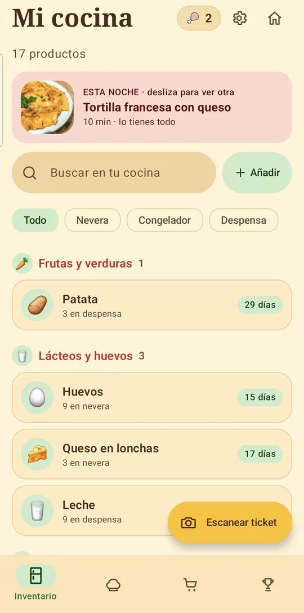
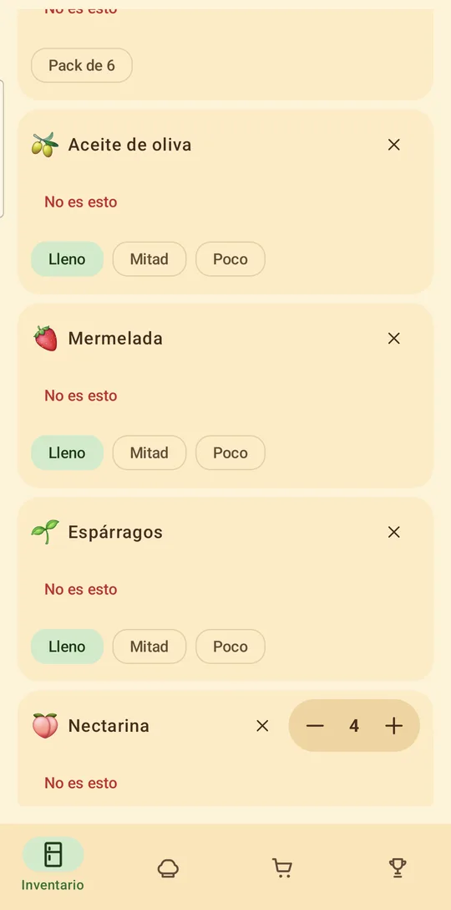
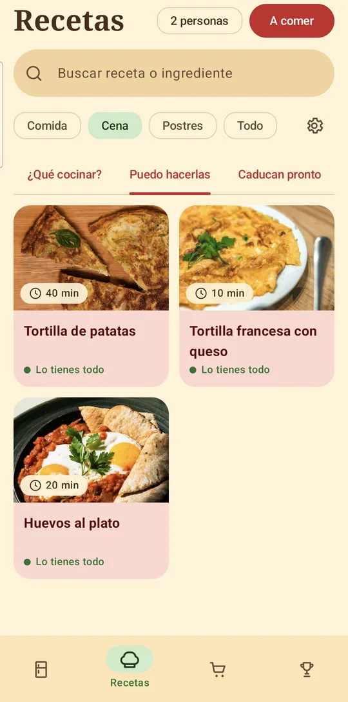
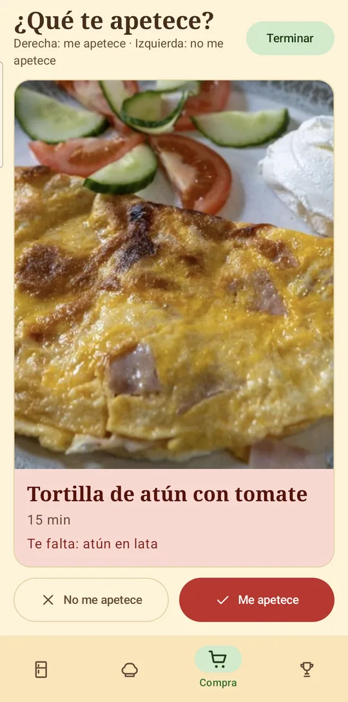
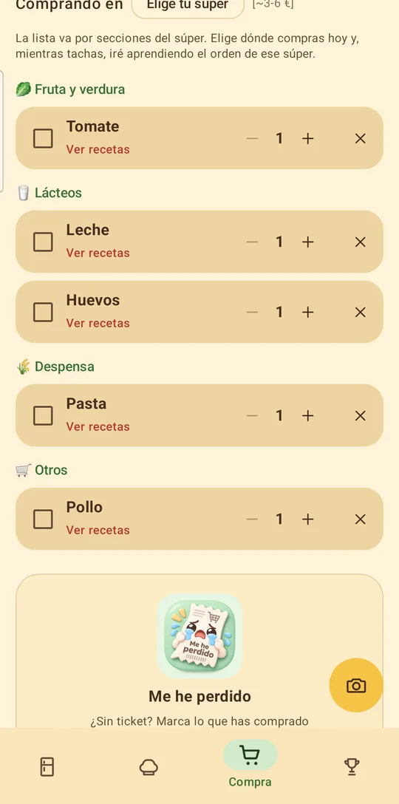
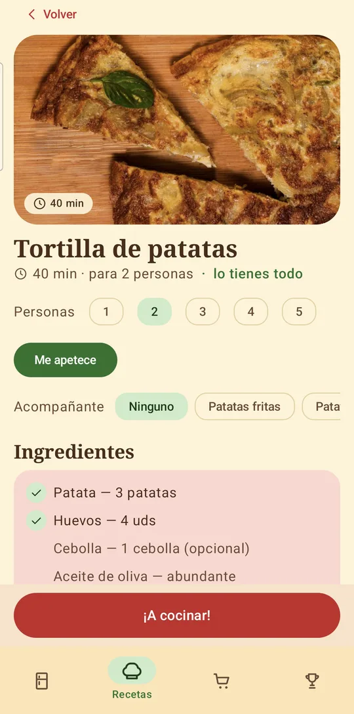
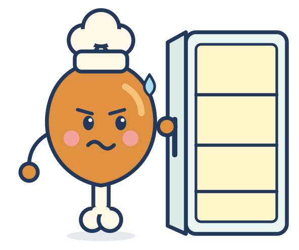

Inventario
Nevera, congelador y despensa con cuenta atrás de caducidad.
Escanea tu ticket y descubre qué cocinar con lo que tienes
Muy pronto en Google PlayGratis, con Premium opcional · Sin anuncios · Hecho en España
Úsala sin registrarte: no hay cuentas y todo se guarda en tu móvil.
¡Hola! ¿Qué cocinamos hoy?






Toca la tuya.
Rico te avisa de lo que caduca pronto y te propone platos para gastarlo antes.
Con lo que tienes en casa, la app te enseña qué puedes cocinar ahora y qué te falta para otros platos.
Comparte la cocina entre varios móviles con la casa compartida, gratis.
Compras solo lo que falta y ves un precio estimado antes de ir al súper.
Filtros de dieta y alérgenos (orientativos) para ver solo recetas que te encajan.
Elige de 1 a 5 personas y las cantidades de la receta se ajustan solas.
La app lee el ticket en tu móvil, guarda los productos y borra la foto.
Te propone recetas con tu inventario y, al cocinar, resta lo que gastas.
Tu lista de la compra, con un precio estimado.
Nevera, congelador y despensa con cuenta atrás de caducidad.
Más de 150 recetas con foto, ajustadas a las personas y a tus cantidades.
Cartas para elegir platos y apuntar a la compra lo que falta.
Lo que falta, ordenado por secciones del súper y con precio orientativo.
Lo que sobra de un plato se guarda y se convierte en otro.
Rachas e insignias por cocinar y no tirar comida. Sin castigos.
Una cocina, varios móviles: todos ven el mismo inventario y la misma lista de la compra. Es gratis, funciona cuando los móviles están en la misma wifi y no pasa por ningún servidor.
Sí. La app es gratis y tiene algunos límites (por ejemplo, el número de tickets que escaneas al mes). Más adelante habrá un Premium opcional para quitarlos. La casa compartida es gratis.
No. No hay cuentas: para compartir la cocina basta un código y estar en la misma wifi.
Se guardan en tu móvil, sin servidor ni cuentas. De cada ticket solo queda el texto: la foto se borra. Si compartes casa, los datos pasan solo entre vuestros móviles por la wifi, cifrados. Más detalle en la política de privacidad.

¿Dudas, ideas o algo que no funciona? Escríbenos: appricorico (arroba) gmail.com